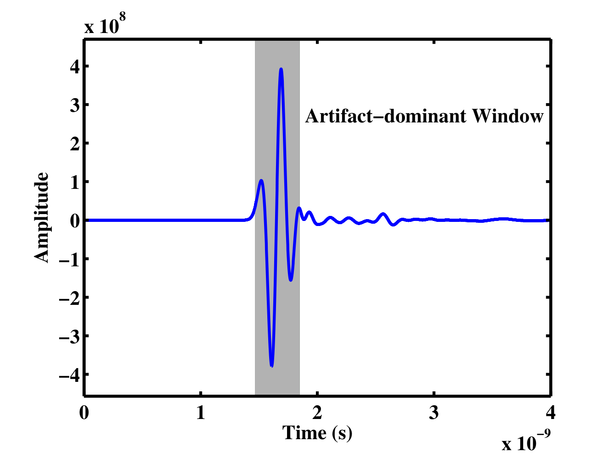
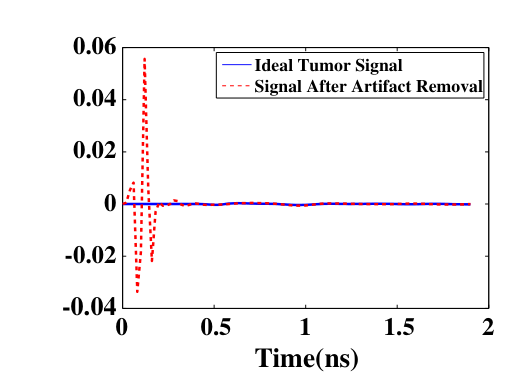
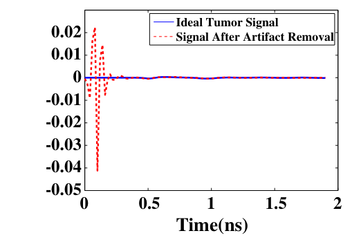
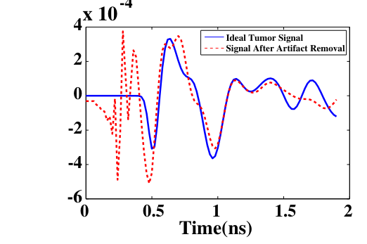
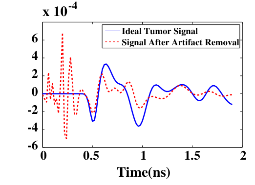
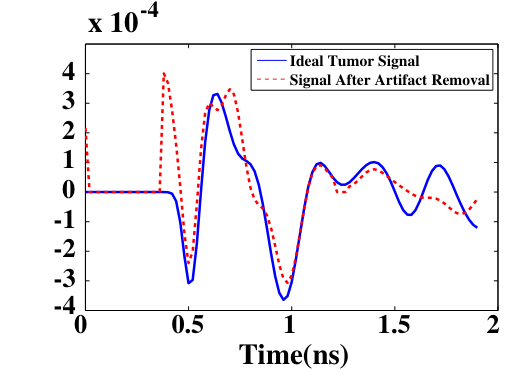

A radar antenna of length D and height W lights a patch of ground. The patch is narrow along the flight direction, about Rλ/D, and wide across it, about Rλ/W. The following slides follow the along-track direction, where synthetic aperture radar improves the resolution.
Step 1
A real antenna
δ ≈ Rλ/D
The beam is about λ/D wide. Two targets inside the same footprint return their echoes together, so the footprint is the real-aperture resolution.
Beamwidth λ/D
Footprint
Far field beyond 2D²/λ
Antenna needed for 1 m
The two targets are
Step 2
The antenna moves
L ≈ Rλ/D
The same antenna, range and targets, now moving along the track. Each target returns an echo while it is in the beam (blue), and the radar records their sum (red). A target stays in the beam over one footprint of track: the synthetic aperture L.
Synthetic aperture L
D, λ, R
The signal model behind delay-and-sum beamforming
Each antenna sends a short pulse and records the echoes. Part A derives, from the wave equation, how the recorded echoes depend on the scatterers, and how inverting that relation gives the delay-and-sum (DAS) image. Part B shows which assumptions the derivation makes and how weighting factors, MIST and robust Capon beamforming (RCB) compensate for them. The derivation follows Curtis, Lavoie and Fear (2017).
Part A. From the wave equation to the DAS equation
Step 1
Wave speed, wavelength and wavenumber
A material with a higher relative permittivity slows the wave, so the same frequency has a shorter wavelength in it. The clocks show the phase at points 5 mm apart: every hand turns at the same rate f, each one lags its neighbour by a fixed angle, and k is that lag per metre. Drag the marker to read the phase lag kR accumulated over a distance R from the source.
εrrelative permittivity of the medium (1 for vacuum)cwave speed in the medium; c0 = 3×108 m/s in vacuumλwavelength, the distance between crestskwavenumber, the phase change per metre (rad/m)
Step 2
A short pulse contains a band of frequencies
The pulse p(t) is a sum of sinusoids. Its spectrum P(f) gives the amplitude and phase of each one; a shorter pulse needs a wider band.
P(f)spectrum of the pulse: how much of frequency f it containsej2πfta sinusoid of frequency f written as a rotating complex number, cos + j sinjthe imaginary unit, √−1
Step 3
A point-like antenna radiates a spherical wave
At distance R the wave arrives with a phase delay kR and an amplitude reduced by 1/(4πR), because the same energy is spread over a larger sphere. This is the Green's function of the scalar wave equation. In a lossy medium the wavenumber is complex, k = β − jα, and the amplitude also decays as e−αR.
rmposition of antenna mrany point in the mediume−jβRphase delay accumulated over the distance R; β = 2πf/c is the phase constant1/(4πR)radial spreading of a spherical wavee−αRloss in the medium; α is the attenuation constant in nepers per metre (1 Np = 8.69 dB)Eincincident field, the field that reaches r
Assumed: homogeneous mediumAssumed from here on: lossless (α = 0) and non-dispersive (β proportional to f)Assumed: point-like antenna
Step 4
The recorded echo from point scatterers
Each scatterer re-radiates the field that reaches it in proportion to its reflectivity σn, and the re-radiated wave travels the distance Rn back to the antenna. Under the Born approximation the field reaching each scatterer is the incident field alone, so G appears twice and the echoes of the scatterers add.
Escm(f)scattered field recorded by antenna mEtottotal field at the scatterer: the incident field plus the echoes of all other scatterersG(a, b)field at a from a point source at b; it depends only on |a − b|, so G(a, b) = G(b, a)σnreflectivity of scatterer n: set by its permittivity contrast Δεr and its volumeχ(r′)relative permittivity contrast with the background: zero where the material matches its surroundings; complex if the materials are lossye−j2kRnround-trip phase delay, the time of flight 2Rn/c(4πRn)2spreading on the way out and on the way back
Assumed: Born approximation (weak scattering, no interaction between scatterers)Assumed: object is a sum of independent point scatterersAssumed: reflectivity does not depend on frequency
Step 5
Range processing recovers reflectivity against distance
Dividing by P(f) and taking the inverse Fourier transform over the band turns the recorded spectrum into a range profile with a peak at each scatterer. The parameters follow Table II of Curtis et al. (2017); εr = 2.5 is assumed here.
The spreading changes how bright a scatterer appears, not where it appears.
kr = 2krange wavenumber; the factor 2 accounts for the round tripkr = 4πf/crange wavenumber: the same frequency samples, labelled by kr instead of fΨm(r)psi: the range profile, the inverse Fourier transform from range wavenumber kr to distance rδ(r−Rn)a spike at the scatterer's distance Rn; a finite band widens it to a sinc of width about c/(2B)
Step 6
The time-domain form: delay, then read the sample
Keeping the pulse and writing the range phase as a time delay turns the range profile into the recorded time signal, read at the round-trip delay of the focal point. Every point on the circle through r has the same delay, so one antenna gives range and no direction. Drag the focal point.
sm(t)time signal recorded by antenna mτm(r)round-trip travel time from antenna m to the focal point r and back, 2|r − rm|/cτ = 2r/cround-trip time for distance r: the same phase as krr at every frequencyImthe delay-and-sum result for antenna m; it keeps the pulse, where the range profile Ψm divides it outδ sifting∫ s(t) δ(t − τ) dt = s(τ): integrating against a delta picks out the value of the signal at τ
Assumed: straight-line propagation at one average speed c
Step 7
Summing over antennas forms the image
The circles from different antennas cross only at the scatterer, where the echoes add in phase. Elsewhere they add with mixed signs and partly cancel. Click inside the breast to move the scatterer. The left image is the signed sum; the right image squares it and integrates over a window about one pulse long, which gives the energy image used in practice.
[Σ …]2sum first, then square: echoes add in phase before squaringTintegration window, about one pulse long, which collects the echo energy around the delay
Part B. Assumptions, weighting factors and adaptive beamformers
Step 8
The assumptions in the derivation
Each simplification enters at one stage of the derivation. The grey line gives the finding of Curtis et al. (2017) for their antenna and phantoms.
Map
A design space for beamformers
The beamformers that follow differ in three choices: how the weights are set, the domain in which the processing is done, and the propagation model. Methods shown in the explainer are highlighted; select one to open its page.
adaptiveModel-based compensation of dispersion and attenuation
Subspace
fixedTime-reversal back-propagation
adaptiveDORT,MUSIC(eigenvectors of the data)
Learned
Networks trained on simulated or measured data, applied to signals or to DAS images
Weights: fixed weights depend only on the geometry; data-adaptive weights are computed from the signals at each focal point.
Domain: a delay in time is a phase shift in frequency, so the same method can be written in either domain; wavenumber methods use FFTs.
Model: the delay model can be replaced by the wave equation, or by the subspace of the measured data.
Every method aligns the echoes with a propagation model, weights them and combines them; methods differ in the weights, the domain or the model.
The weighted DAS equation
The assumptions remove amplitude terms that real echoes carry. Weighting each aligned signal before the sum restores them; the weighted signals are then summed, squared and integrated over a window T about one pulse long.
τm(r)round-trip delay: aligns the echoes from rΣsum over antennas: echoes from r add in phasewm(r)weight per antenna and focal point; w = 1 is plain DAS[·]2, ∫0Tenergy in a window T about one pulse long
Hagness et al. (1998): the original confocal DAS; aligned signals summed without weights.
Li and Hagness (2001): introduced weights wm in I(r) = [Σ wm Bm(τm(r))]2 to compensate the radial spreading of the cylindrical waves in their 2-D model; no formula for wm is given.
Fear et al. (2002): applied the compensation to each signal before summing, according to the propagation distance of each time sample. In the planar system the factors came from an FDTD simulation of the antenna (spreading and loss together); in the cylindrical system a 1/r spreading model was used, and path-loss compensation was omitted because it enhanced clutter.
Klemm et al. (2008): improved DAS (IDAS), which multiplies the energy at each focal point by a quality factor computed from how the energy builds up as the aligned signals are added, rewarding focal points where they add coherently.
Klemm et al. (2009): coherence-factor DAS (CF-DAS), which scales each focal point by a coherence factor adapted from ultrasound imaging; it is close to 1 when the aligned signals agree and close to 0 when they cancel.
O'Halloran et al. (2010): channel-ranked DAS, which weights each channel by the rank of its path length, so that signals that cross less heterogeneous tissue count more.
Curtis et al. (2017): radial-spreading compensation by (4πR)2, derived from the Green's function.
Step 9
Weighting factors
Two equal tumours sit at different depths in a lossy medium with weak clutter. Distance-based weights undo the amplitude terms that the model dropped; the coherence factor scales each pixel by how well the aligned signals agree. Click a pixel to see its aligned signals.
wRSundoes the (4πR)2 spreading dropped in range processingwαundoes the loss factor of the lossy Green's function on the way out and back, e−2αR, with one α for all frequenciesCF1 when all aligned samples agree, near 0 when they cancelRmdistance from antenna m to the focal pointR0reference distance (60 mm, the antenna-ring radius) that makes the weight dimensionless; it scales the whole image and does not change its shape
Step 10
Channel-ranked and quality-factor weights
Two further weights judge each channel or each focal point. The channel-ranked weight trusts signals with shorter paths more, because they cross less tissue whose speed differs from the assumed average; the quality factor rewards focal points where the energy grows quadratically as the aligned signals are added, as it does for a true scatterer. Tissue heterogeneity perturbs each travel time; click a pixel to inspect it.
rankmposition of antenna m when the antennas are sorted by distance to the focal point (1 = nearest)Nnumber of signals ranked (here the 32 antennas)E(n)energy collected after adding the first n aligned signalsσestandard deviation of the energies of the individual signalsQFquality factor: the curvature a of the fitted parabola; large when the energy grows quadratically, as for a coherent scattererhrelative error of the local wave speed, which perturbs each travel time; the beamformer still assumes the average speed
Illustrative: heterogeneity modelled as random travel-time errors that grow with path lengthAll three images: echoes first equalised for spreading and loss
Step 11
MIST replaces each weight with a filter
In a lossy medium, high frequencies fade faster, so echoes that travelled further arrive smaller and wider. MIST models this path-dependent response Hm(f) and designs one FIR filter Wm(f) per channel so that the summed response from the focal point is a delayed copy of the transmitted pulse; the pixel value is the energy of the summed output within a short time window.
Hm(f; r0)modelled round-trip propagation between antenna m and focal point r0: loss, phase and spreading (1/Rm2 for a point source in 3-D; Bond et al. use 1/Rm in their 2-D model)Wm(f)filter for channel m (an FIR filter in the time domain, which also supplies the fractional part of the alignment delay)e−j2πfTdunit gain and a fixed delay Td: the pulse passes undistortedηregularisation weight that penalises the filter norm, so that noise and model errors are not strongly amplified
Step 12
Capon and robust Capon beamformers choose the weights from the data
After alignment the wanted echo is the same in all eight channels. A second echo, from a scatterer near antennas 1 to 3, arrives later and is strong only in those channels. The Capon beamformer minimises the output power while keeping unit gain on the wanted echo. When the channels do not match exactly, it also suppresses the wanted echo; the robust form allows the match to be wrong by up to ε.
y(t)the M aligned channel samples at time t, as a vectorasteering vector; after alignment a = [1, 1, …, 1]Te(t)noise and echoes from other locationsRsample covariance, the average of y(t)y(t)T over timeŵweights; DAS uses w = a/Mεhow far the true steering vector â may lie from a (RCB); ε → 0 gives standard Capon
Part C. Early-time artefact removal
Step 13
The early-time artefact
The recorded signal begins with the reflection from the antenna and the skin, which is several orders of magnitude larger than the tumour echo and overlaps it in time when the tumour lies close to the skin.

Time-domain backscattered signal recorded at channel 9 of a breast model, with the artefact-dominant time window shaded; the smaller oscillations after the window contain the responses from inside the breast. Elahi (2017), Fig. 7.1; published as Elahi et al. (2017).
Step 14
Artefact-removal algorithms
Each algorithm estimates the artefact in a channel from the other channels, or from the early part of the same signal, and subtracts it. The estimate is accurate when the skin response is similar across channels.
bi[n]signal recorded at channel i; si[n] is the signal after removalbirotsignal recorded after rotating the array; here by one antenna spacingb−i[n], qtime samples n−1, n, n+1 of all other channels, and the filter weights fitted over the artefact window n0 to n0+m−1, fixed here as the first 12 % of the recordX, σ1u1v1Tall channels as rows of a matrix, and its largest singular component, taken as the artefactentropy windowthe entropy of the energy across channels marks where the artefact ends; earlier samples are set to zerohybridthe entropy curve selects the artefact-dominated window, from the start to the minimum after its first maximum, and the Wiener filter is fitted over that window
Average subtraction: Fear and Stuchly (2000)Rotation subtraction: Klemm et al. (2008)Wiener filter: Bond et al. (2003)SVD: Verma and Gaikwad (2009)Entropy-based window: Zhi and Chin (2006), simplified hereHybrid: Elahi et al. (2014)
Step 15
Artefact suppression and tumour preservation
An algorithm that removes the artefact more completely also tends to remove more of the tumour response, particularly where the tumour echo is similar across channels or overlaps the skin response in time.

Rotation subtraction

Average subtraction

Wiener filter

SVD

Entropy-based time window
Ideal tumour signal (solid) and the signal after artefact removal (dashed) at one channel of a homogeneous FDTD breast model. Elahi et al. (2013), Fig. 2.
Step 16
Artefact removal applied to a measured signal
Fig. 9 of J. Wang, M. Zhang, Y. Bai, H. Xu and Y. Fan, "Distance compensation-based dual adaptive artifact removal algorithm in microwave breast tumor imaging system," Biomed. Signal Process. Control, vol. 88, 105598, 2024, shows one signal measured on a breast phantom, unprocessed and after background subtraction, average subtraction, an adaptive time-entropy method and the DCAF method. The figure is not reproduced in the online version; it is available at doi:10.1016/j.bspc.2023.105598.
Recap
Relations between the beamformers covered here
Slide
Comparison of beamforming approaches
Approach
Weights
Clutter suppression
Reported limitation
Cost
DAS
Fixed
Incoherent summation
Strong clutter in heterogeneous tissue
Lowest
CF-DAS, IDAS
Data-dependent
Coherence weighting per voxel
Also lowers weak true responses
Low
DMAS, CR-DAS
Fixed
Pair products; path ranking
Below DAS in complex scenarios
Moderate
MIST
Model-based
Filters matched to a propagation model
Depends on the assumed tissue model
Moderate
Capon, RCB
Data-adaptive
Minimum-variance weights
Gain lost under model uncertainty
High
Migration, holography
Fixed
As DAS, computed with FFTs
Regular sampling; near-field mapping
Low
DORT, MUSIC
Subspace
Separates point scatterers
Assumes few, well-separated scatterers
Moderate
Learning-based
Learned
Learned from training data
Generalisation to new anatomy
High to train
Every row depends on a propagation model, and an error in that model degrades all of them.
Slide
Image quality metrics
Signal-to-clutter ratio
Signal-to-mean ratio
Localisation error
FWHM: the extent of the tumour response at half its peak intensity.
Signal metrics: ASR and TEPR evaluate pre-processing before imaging.
Detection performance: sensitivity, specificity and ROC curves over many scans with and without tumours.
Slide
Open problems
Clinical radar imaging
Dense tissuecontrast near 1.1:1 against fibroglandular tissue
Propagation modelpatient-specific velocity and dispersion
Realistic 3D validationheterogeneous phantoms with ground truth
Benchmarksshared datasets, metrics and open software
Clinical evidencesensitivity and specificity in large trials
Reported results are hard to compare because phantoms, scan geometries and metric definitions differ; open datasets (UM-BMID, the Galway phantom data) and open-source software (MERIT) allow comparison on the same data.
Clinical translation requires evidence from multicentre studies with many patients.
Slide
Summary
A scatterer reflects in proportion to its permittivity contrast with the surrounding tissue and to its volume; the contrast is large against fat and small against fibroglandular tissue.
Synthetic aperture radar and radar-based breast imaging both form an image by summing echoes along the delay curve of each candidate scatterer.
From the Green's function and the Born approximation, each recorded echo is a sum of delayed pulses from point scatterers; delay-and-sum aligns these echoes for each focal point and sums them.
Delay-and-sum neglects spreading, attenuation, dispersion and heterogeneity; weighting factors, MIST filters and Capon weights each restore or adapt for part of what is neglected.
Artefact removal involves a trade-off between suppressing the skin response and preserving the tumour response.
Beamformers differ in their weights, their domain and their model, and all of them depend on an accurate propagation model.
Comparable evaluation needs stated metrics, shared datasets and a validation chain from simulation to patients.
Reference
Symbols
Symbol
Meaning
Unit
εr
Relative permittivity: how strongly a material stores electric energy compared with vacuum
none
c, c0
Wave speed in the medium and in vacuum; c = c0/√εr
m/s
f, λ
Frequency and wavelength; λ = c/f
Hz, m
k, β, α
Wavenumber; in a lossy medium k = β − jα, with β the phase constant and α the attenuation constant
rad/m, Np/m
p(t), P(f)
Transmitted pulse and its spectrum
G(f, r)
Green's function: the field at r produced by a point source
1/m
σn, rn
Reflectivity and position of point scatterer n
Escm(f), sm(t)
Recorded echo at antenna m, in frequency and in time
R, Rm
Distance from the antenna to a point; distance from antenna m to the focal point
m
τm(r)
Round-trip delay 2Rm/c
s
Ψm(r)
Range profile from antenna m
I(r)
Image value at focal point r
wm, Wm(f)
Scalar weight and frequency-dependent filter for channel m
a, R, ε
Steering vector, sample covariance matrix and uncertainty bound of the Capon beamformers
F−1
Inverse Fourier transform: from frequency to time, or from wavenumber to distance
The derivation and the assumptions follow C. Curtis, B. R. Lavoie and E. Fear, "An analysis of the assumptions inherent to near-field beamforming for biomedical applications," IEEE Trans. Comput. Imag., vol. 3, no. 4, pp. 953–965, 2017, doi:10.1109/TCI.2017.2756022 (Sections II–III, Appendix A). The weighted DAS, coherence factor, MIST and RCB formulations follow the review in Ch. 2 of M. A. Elahi's PhD thesis and Ch. 2 of C. Curtis's PhD thesis, which cite Bond et al. (2003) for MIST and Li, Stoica and Wang (2003) for RCB. The artefact-removal slides follow Ch. 3 and 4 of the same thesis, and cite Fig. 9 of J. Wang et al., Biomed. Signal Process. Control 88 (2024) 105598, and Fig. 2 of M. A. Elahi et al., Prog. Electromagn. Res. 141 (2013) 185–200. The history of the weighting factor follows Hagness et al. (1998), Li and Hagness (2001), Fear et al. (2002), Klemm et al. (2008, 2009) and O'Halloran et al. (2010).
All signals are computed in the browser from the stated models. The breast-model and beamformer simulations use a modulated Gaussian pulse centred at 4 GHz in a homogeneous medium of εr = 9; the scatterer positions, attenuation values and noise are illustrative choices.